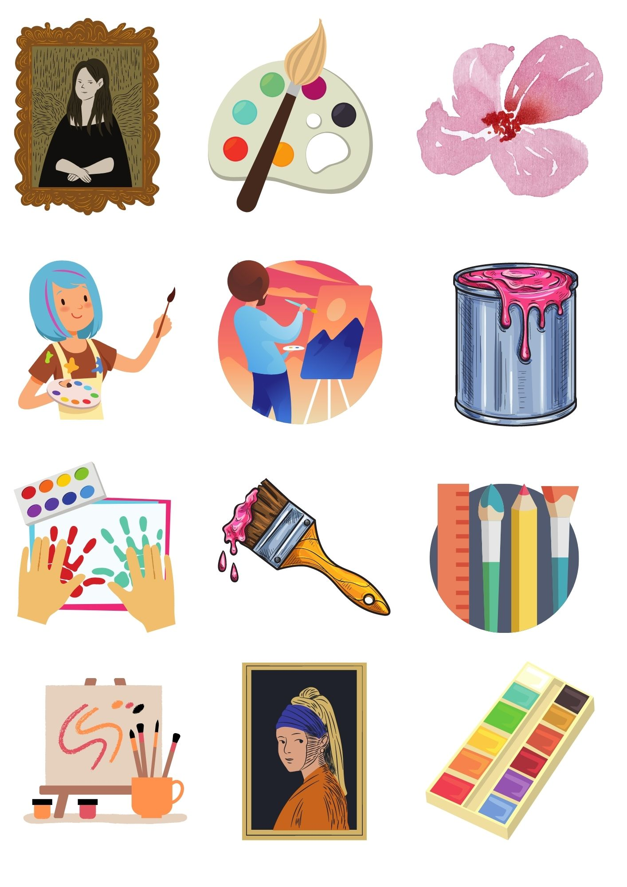
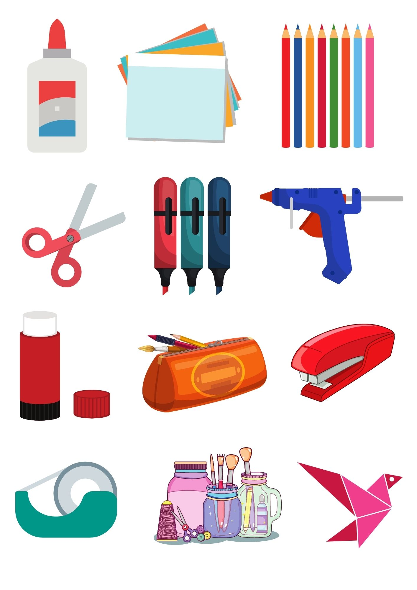
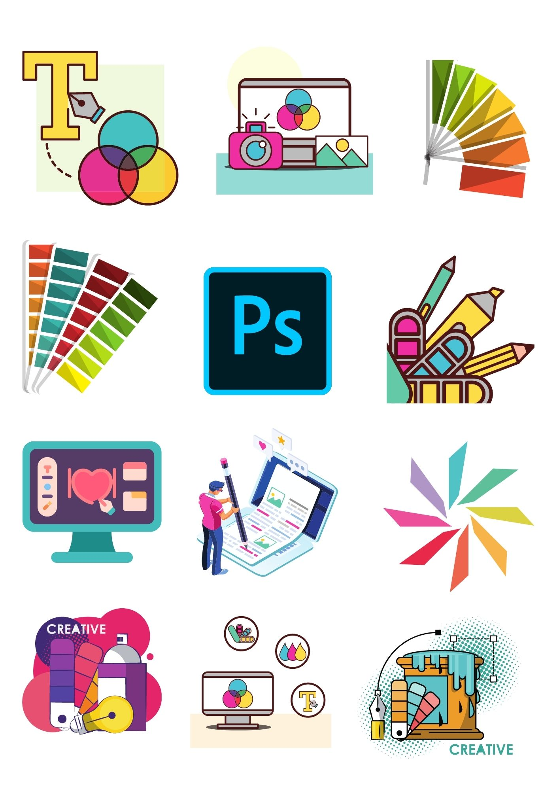

35+ Free Printable Art Themed Stickers
August 4, 2021 │ By : Inaas Asad
Just like the title suggests, you can find dozens of art themed stickers free to download on this page!

To get access to the stickers, all you must do is download the high quality pdf files, print them on sticker paper and cut out the stickers.
1. Painting Themed Stickers
The first type of available sticker pack is related to the theme of painting. It has stickers of paintbrushes, palettes, paints, paintings, canvases, you name it:
2. Crafts Themed Stickers
If painting is not your thing, and you’re into crafts instead, check out these stickers:
3. Graphic Design Themed Stickers
If you prefer graphic design over traditional art, you’ll love this sticker pack:
Other Posts:
- Best Free Apps and Websites for Artists and Designers
- 10 Amazing Summer Themed Color Palettes
- Amazing Websites for Graphic and Web Design Inspiration
- The Basics of Color Theory
- 100 Painting Ideas for when You are Completely Blank
- 10 Hacks Every Beginner Artist Should Know
- Terrific Bucket List Ideas for Artists